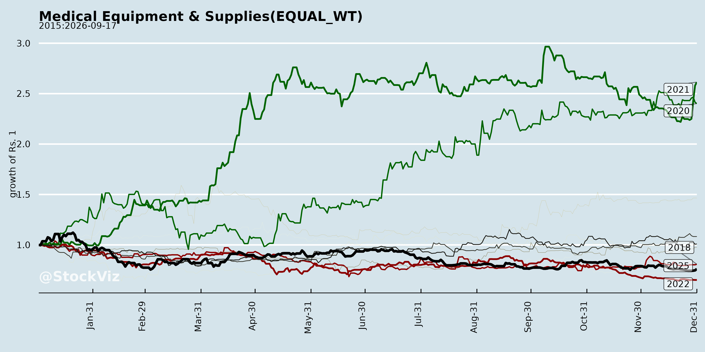
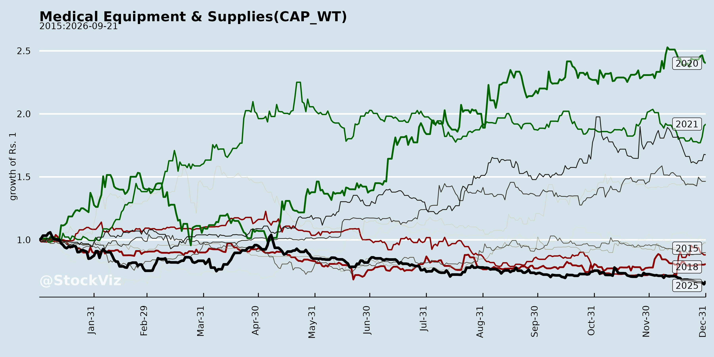
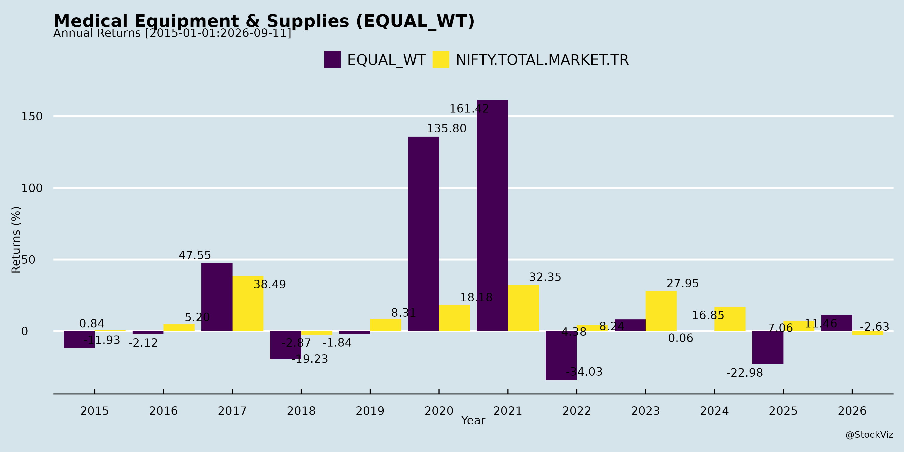
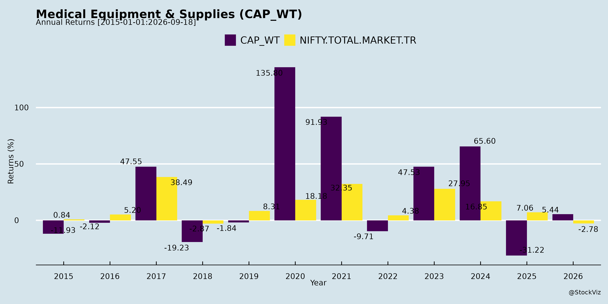
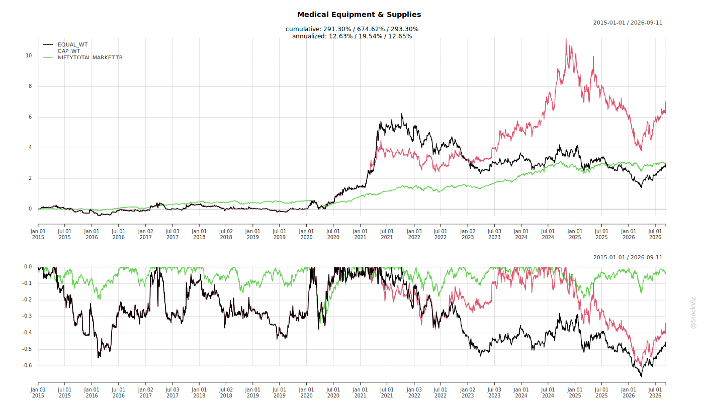
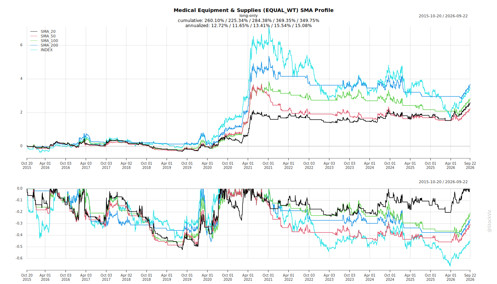
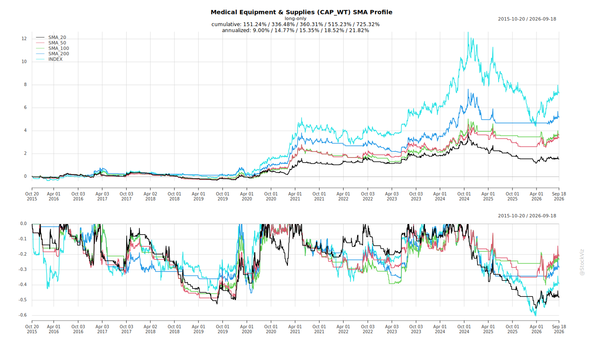
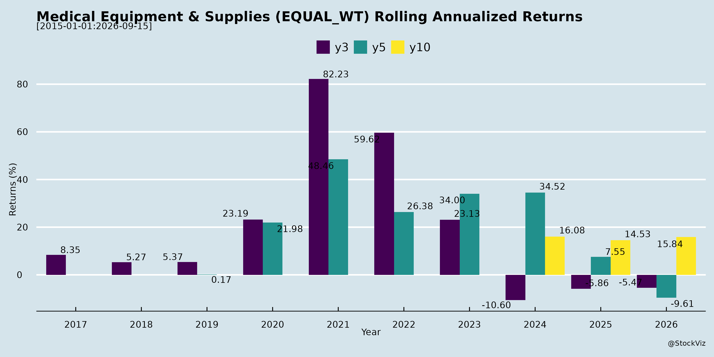
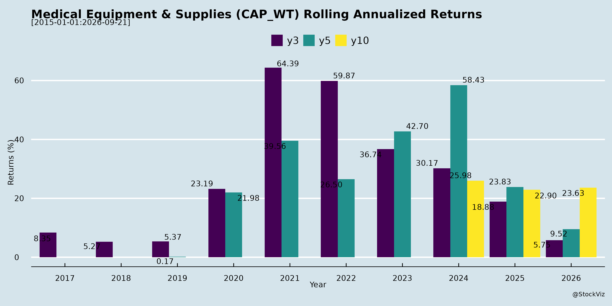

asof: 2025-11-27
Analysis of Indian Medical Equipment & Supplies Sector
The provided documents (earnings transcripts from Fabtech Technologies, Fischer Medical Ventures, Poly Medicare, Tarsons Products, and minor updates from Laxmi Dental) offer insights into key players in medtech (devices, labware, imaging, pharma engineering). The sector benefits from India’s push for self-reliance but faces global headwinds. Below is a structured analysis of headwinds, tailwinds, growth prospects, and key risks, followed by a summary.
Headwinds (Challenges Pressuring Performance)
Tailwinds (Supportive Factors Driving Momentum)
Growth Prospects (Forward Outlook)
Key Risks
Summary
The Indian medtech sector shows resilient domestic tailwinds (govt schemes, import substitution) driving 15-30% growth in key segments (devices, diagnostics, labware), with companies like Poly Medicare (15-16% FY26 guidance) and Fischer (explosive 120% H1) outperforming. Global headwinds (US tariffs, China competition, Europe slowdown) cap exports (5-10% growth), leading to lumpy H1 results (e.g., Fabtech/Tarsons EBITDA steady but PAT pressured). Growth prospects are strong (INR350-400 Cr peaks from expansions; $70B ortho TAM via acquisitions), but hinge on capex ramps (3-5 years) and trade resolutions. Key risks center on execution and macros, with balanced margins (25-30%) providing buffers. Overall, positive long-term outlook (15-20% sector CAGR) for import-replacing innovators, but near-term volatility persists—favor domestic-focused players with global diversification.
Data derived solely from transcripts; no external sources used.
asof: 2025-11-27
Analysis of Indian Medical Equipment & Supplies Sector (MedTech)
Based on Q3 FY25 (ended Dec 31, 2024) unaudited financial results of four listed players—Laxmi Dental Limited (dental/lab products, recent IPO), Nureca Limited (home healthcare), Poly Medicare Limited (devices/disposables), and Tarsons Products Limited (labware/instruments)—the sector shows robust revenue momentum amid expansion but faces margin pressures and operational risks. Aggregate revenue grew ~30-60% YoY across most (except Nureca flat), driven by domestic demand and exports. PAT growth varied (strong for Laxmi/Poly/Tarsons, losses for Nureca). Key insights below.
Tailwinds (Positive Drivers)
Headwinds (Challenges)
Growth Prospects
Key Risks
| Risk Category | Details | Impacted Cos. | Mitigation |
|---|---|---|---|
| Operational | Machinery damage (Tarsons ₹93 Cr provision, insurance pending); inventory swings. | Tarsons | Insurance claims; supply chain fixes. |
| Financial | High debt (finance costs 2-5% of revenue); exceptional gains (Laxmi ₹66 Cr property sale). | All | QIP/debt repayment (Poly). |
| Regulatory/Compliance | FDA/CE marks for exports; audit reliance on mgmt.-certified subs (Poly/Laxmi). | Poly, Laxmi | Unmodified reviews; quality certs (ISO). |
| Market | Peer losses (Nureca); forex volatility (OCI fluctuations ₹0.3-35 Cr). | Nureca, Tarsons | Hedging; domestic focus. |
| Execution | Capex delays; segment concentration (Laxmi lab 65%). | Poly, Laxmi | Monitoring agencies (CRISIL for Poly). |
| External | Raw mat inflation; China competition; US tariffs. | All | Local sourcing/PLI. |
No defaults/loans issues; RPTs/deviations N/A.
Summary
The Indian MedTech sector is tailwind-dominant with 20-50% revenue growth fueled by domestic healthcare capex (₹10 Tn+ market by 2030), exports, and policy (PLI/Atmanirbhar). Laxmi/Poly/Tarsons exemplify strength (aggregate 9M PAT ~₹500 Cr), but Nureca highlights vulnerability to opex/debt. Growth >15% FY25 possible via expansions, though EBITDA margins ~15-20% pressured by costs. Prioritize risks: Debt reduction, supply chain resilience, and inorganic execution. Bullish long-term (import substitution), but monitor Q4 for insurance/capex outcomes. Investors: Favor exporters like Poly/Tarsons (P/E 30-50x implied).
asof: 2025-11-27
Analysis of Indian Medical Equipment & Supplies Sector
Using the provided documents (corporate presentations, IPO monitoring reports, regulatory intimations, and disclosures from Fischer Medical Ventures Ltd, Laxmi Dental Ltd, Nureca Ltd, Poly Medicare Ltd, and Tarsons Products Ltd), here’s a structured summary of headwinds, tailwinds, growth prospects, and key risks for the sector. These insights reflect trends in medtech manufacturing (e.g., MRI/CT/X-ray devices, dental supplies, diagnostics kiosks), localization efforts, and post-IPO execution.
Tailwinds (Positive Factors)
Headwinds (Challenges)
Growth Prospects
Key Risks
Overall Summary: The sector benefits from strong tailwinds like localization and demand gaps, driving 20%+ growth via capex/digital innovation. However, headwinds from regulatory delays and execution risks persist, with near-term prospects tied to FY26 capex delivery. Investors should monitor IPO utilization (e.g., Laxmi Q3 reports) and litigation resolutions (Tarsons). Bullish long-term on policy support, but high execution risk warrants caution.
asof: 2025-11-27
Summary Analysis: Indian Medical Equipment & Supplies Sector
(Insights derived from Q1/Q2 FY26 earnings transcripts of Fabtech Technologies, Fischer Medical Ventures, Poly Medicare, Tarsons Products, and related announcements. Sector includes turnkey pharma engineering, diagnostics/imaging, disposables/devices (renal/cardio/critical care/ortho), and labware. Overall: Strong domestic momentum amid global headwinds; growth moderating to 15-20% FY26 from post-COVID highs.)
Headwinds (Challenges Pressuring Near-Term Performance)
Tailwinds (Supportive Factors Driving Resilience)
Growth Prospects (Medium-Term Opportunities: FY27-30)
Key Risks (High-Impact Uncertainties)
Overall Outlook: Sector resilient with domestic tailwinds offsetting global headwinds; FY26 growth 15-25% (company-specific). Long-term prospects strong (CAGR 15-20%) via policy, expansions, and adjacencies, but near-term volatility from tariffs/execution. Conservative guidance reflects caution; monitor H2 ramps and tariff resolutions for upside.
asof: 2025-11-27
Summary Analysis: Indian Medical Equipment & Supplies Sector
Using the provided press releases from key listed players (Fabtech Technologies, Fischer Medical Ventures/Time Medical India, Laxmi Dental, Nureca, and Poly Medicure), this analysis highlights sector dynamics in medical devices, diagnostics, dental products, orthopaedics, and imaging. The sector shows resilience amid innovation and expansion, but faces profitability and execution challenges. Insights are extrapolated from Q2/H1 FY26 results, product launches, acquisitions, and clarifications.
Tailwinds (Positive Drivers)
Headwinds (Challenges)
Growth Prospects
Key Risks
Overall Sector Summary: Bullish on growth (innovation/M&A tailwinds targeting ₹1L+Cr TAM) with 20%+ revenue potential, but profitability headwinds cap margins at 12-16%. Prioritize companies with global scale (Poly Medicure, Fabtech) and digital moats (Fischer, Laxmi). Monitor Q3 results for sustained momentum amid global uncertainties.
Copyright © 2023 SAS Data Analytics Pvt. Ltd. All rights reserved.